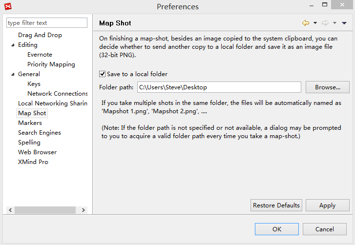

環境設定
使いやすく時間を節約できるように、ショートカットキーや検索エンジンなどは、個人用に設定したいものです。メニューの[設定]→[編集] を選択することで、下記のような多くの個人設定を見ることができます。
- ローカル ファイルからXMindへのドラッグ&ドロップ時の動作を設定します。
- マインド マップについての全般的な設定を変更します。
- Evernote アカウントのリンクとリンク解除を行います。
- マイクロソフトのプロジェクトの優先度と、XMind のタスク優先度の紐付を定義します。
- XMind に関する全般的な設定を変更します。
- XMind のショートカットキーを変更/追加するために、ダイアログボックスでコマンドを選択しそのバインディングにショートカットキーを設定します。
- ネットワーク接続を変更できます。
- ローカルネットワーク共有機能の有効化と無効化と、お使いのコンピューター名前を設定します。
- ローカルフォルダーにマップ ショットのコピーを保存するかどうかを設定します。 
- 上段部分でまずマーカー グループを追加し、下段でグループにマーカーを追加します。
- お気に入りの検索エンジンを選択します。
- スペル チェックに関するオプションを変更し、XMind にあなた自身の辞書(.dict) を追加します。
- トピックのハイパーリンクを開く際に、内部 Web ブラウザーを使用するかどうか設定します。
- XMind Pro へアップグレードするか、有料の機能を非表示にします。